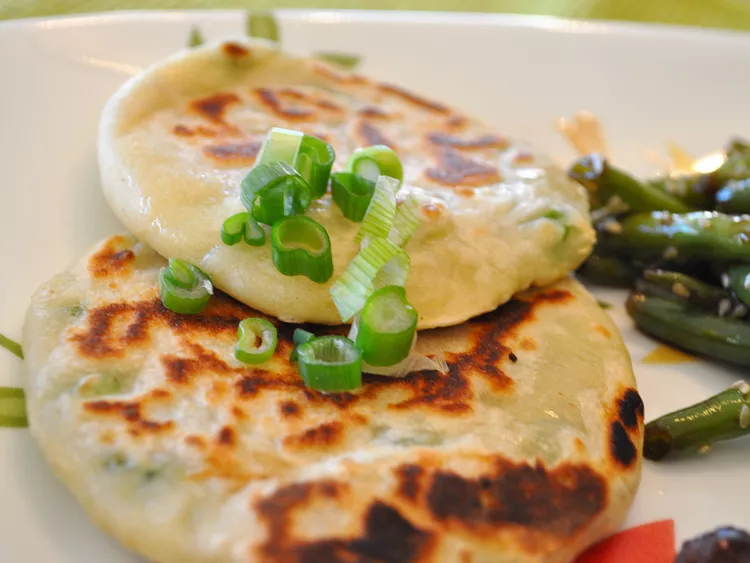

Scallion Pancakes

Description
Scallion pancakes are a savory Chinese flatbread made from dough and filled with chopped scallions. They are pan-fried until crispy and golden brown.
Ingredients
- 3 cups bread flour
- 1 1/4 cups boiling water
- 2 tbsps vegetable oil
- Salt
- Pepper
- 1 bunch green onions, finely chopped
- 2 tsps vegetable oil
Steps
- Use a fork to mix flour and boiling water in a large bowl. Knead dough into a ball.
- Cover bowl with plastic wrap; let dough rest for 30 to 60 minutes.
- Evenly divide dough into 16 pieces. Roll each piece into a 1/4 inch thick circle. Brush each circle with oil, season with salt and pepper, and sprinkle with about 1 teaspoon of green onions.
- Roll up, cigar style; coil each pancake and pinch open ends together to form a disc. Roll each circle flat to about 1/4 inch thickness.
- Heat 2 teaspoons oil in a large skillet. Fry cakes until golden brown, about 2 minutes on each side. Add more oil between batches, if necessary.
Home